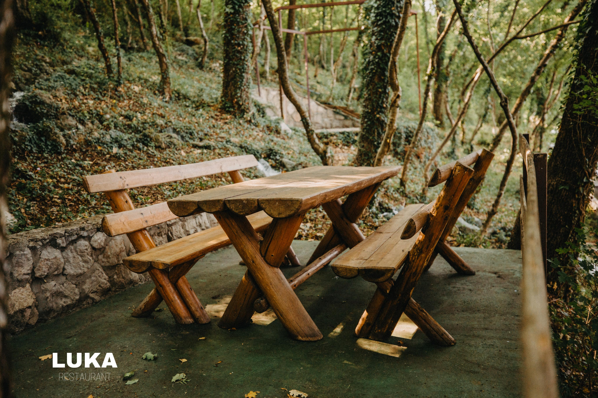

Restoran Luka otvorili su braća Šušak 1996. godine na obiteljskom imanju Lučica. Odgojeni na opojnim okusima domaćeg mesa i raštike, umirujućem mirisu majčina kruha i uštipaka, svježini mlaćanice i masla, a nadahnuti jedinstvenim prirodnim ljepotama Hercegovine sažetim na obiteljskom imanju Lučica, rodila se ideja o otvaranju restorana koji bi vjerodostojno prenio i drugima djelić ove posebne kuhinje u originalnom okruženju.
Eugen Šušak sa suprugom Ornelom i svojih pet prekrasnih djevojčica u restoran Luka udiše obiteljsku atmosferu, jednostavnost, a opet vrhunski gurmanski užitak domaće kuhinje. Idejna i prostorna osmišljenost restorana proizašla je iz Eugenove želje da u autohtonom ambijentu uživate u tradicionalnim domaćim delicijama i očuvate kulturu posebnosti njihove pripreme i jedinstvenih okusa. Stoga, Luka s radošću ugošćuje domaće goste, okrjepljuje zalutalog putnika, ali i oduševljava zahtjevno nepce sve česćeg znatiželjnog namjernika.
Ljeti se rashladite na grabovinom obrasloj padini imanja i uživajte u ljetnom povjetarcu, a um odmorite pogledom na bistri kanal koji pronosi studen i širi svježinu rijeke Lištice. Zimi se ogrijte u toploj i mirisnoj unutrašnjosti restorana uz razbuktanu krušnu peć.
